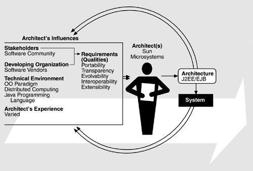

| [ Team LiB ] |
|
16.1 Relationship to the Architecture Business CycleIn the 1980s, the price/performance ratio for personal computers was gradually dovetailing with that of high-end workstations and "servers." This newly available computing power and fast network technology enabled the widespread use of distributed computing. However, rival computer vendors kept producing competing hardware, operating systems, and network protocols. To an end-user organization, such product differentiation presented problems in distributed computing. Typically, organizations invested in a variety of computing platforms and had difficulty building distributed systems on top of such a heterogeneous environment. The Object Management Group's Common Object Request Broker Architecture was developed in the early 1990s to counter this problem. The CORBA model provided a standard software platform on which distributed objects could communicate and interact with each other seamlessly and transparently. In this case, an ORB allows objects to publish their interfaces, and it allows client programs to locate them anywhere on the computer network and to request services from them. However, CORBA was not the only viable distributed object technology for very long. Sun Microsystems soon pushed the Java programming language, which supports remote method invocation (RMI) and so, in effect, builds Java-specific object request broker functionality into every Java Virtual Machine (JVM). Java has the appeal of portability. Once a Java application is developed, its code is portable across all JVMs, which have implementations on most major hardware platforms. Sun Microsystems did not stop with Java. J2EE was developed in the late 1990s using Java RMI as an underlying communication infrastructure. It became an industry-standard specification for the software community to more easily build distributed object systems using the Java programming language. J2EE soon gathered momentum as software vendors rushed to implement it; Java programmers around the world showed great enthusiasm in developing e-commerce applications in "Internet time" using the J2EE framework. J2EE thus competed directly against CORBA as well as against the proprietary Microsoft technologies. The ABC for J2EE/EJB is shown in Figure 16.1. Figure 16.1. The ABC as it pertains to Sun Microsystems and J2EE/EJB |
| [ Team LiB ] |
|